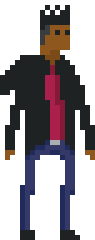

Who I Am...
Part video game nerd, part artist, I am a Front End Developer based in Chicago, IL who utilizes hobbies as inspiration for my work. When I'm not creating websites or applications, I enjoy reading up on game design and development or creating pixel art.

What I Do...
I specialize in Front End Development. Using HTML5, CSS3, and a hint of JavaScript, I construct responsive and fluid sites to accomplish a variety of goals. Coding is akin to another form of art to me, so I make it a priority to incorporate a sizeable helping of creativity in my work.